Discover Your Fortune in the Year of the Dragon (2024)
Please click your zodiac sign
Dragon (1928, 1940, 1952, 1964, 1976, 1988, 2000, 2012, 2024)
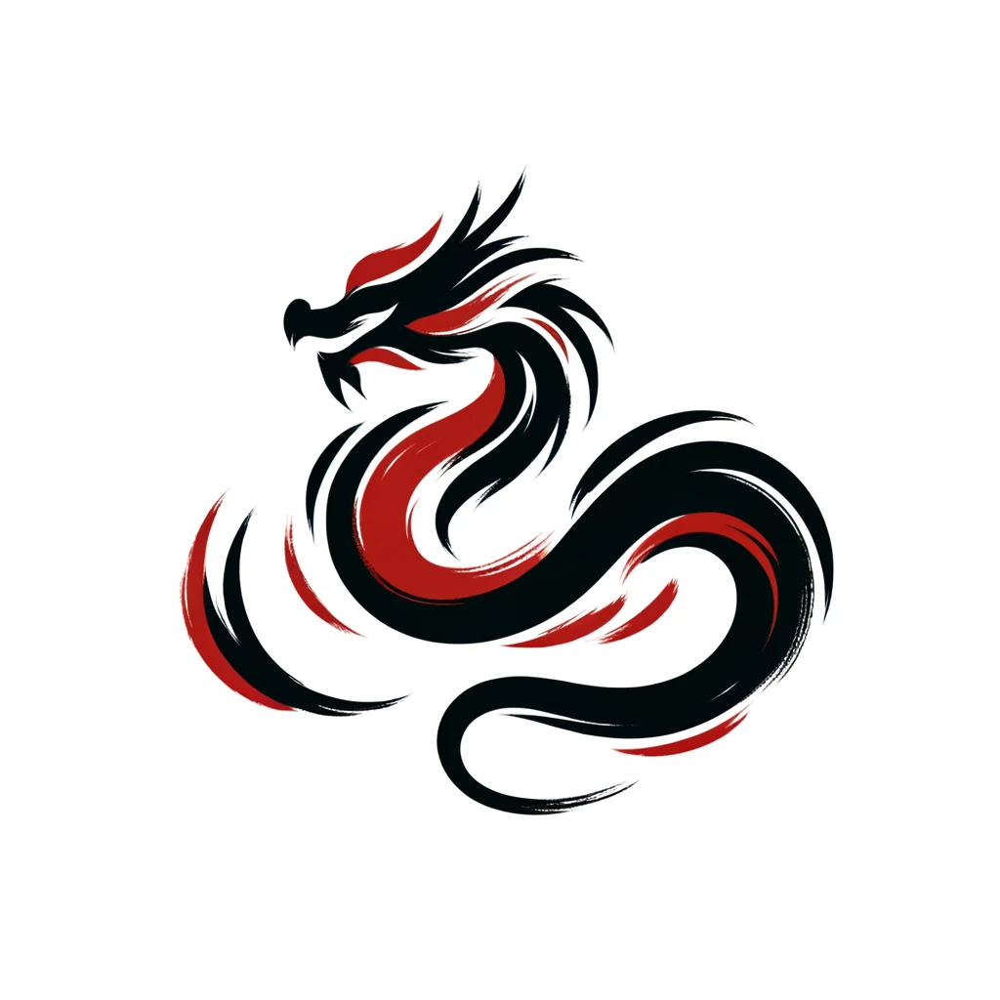
Year of the Dragon Fortune:
English
Health: This year, you'll find energy levels fluctuating. It’s important to maintain a balanced diet and exercise regularly. Consider yoga or meditation for stress relief.Relationship: A year of stability and deepening connections. If you’re single, a significant encounter is likely. For those in a relationship, communication is key to strengthening bonds.Career: Expect a year of opportunities and challenges. Stay adaptable and open to new ideas. Teamwork will play a significant role in your success.Finance: Financially, it’s a year for cautious optimism. Avoid impulsive investments. Budgeting and saving will be crucial.
中文 (Chinese)
健康: 今年您的能量水平会有波动。保持均衡饮食和定期运动很重要。考虑做瑜伽或冥想来缓解压力。感情: 这是一个感情稳定和加深联系的一年。如果您是单身，很可能会遇到重要的人。对于那些已经在恋爱中的人来说，沟通是加强关系的关键。事业: 期待一个充满机遇和挑战的一年。保持适应性和对新想法的开放性。团队合作在您的成功中将扮演重要角色。财务: 在财务上，这是一个谨慎乐观的一年。避免冲动投资。预算和储蓄至关重要。
日本語 (Japanese)
健康: 今年はエネルギーレベルが波乱含みです。バランスの取れた食事と定期的な運動を心がけてください。ストレス解消のためにヨガや瞑想を検討してみてください。関係: 安定し、つながりを深める一年です。独身の方は、重要な出会いがありそうです。カップルの方は、コミュニケーションが絆を強化する鍵です。キャリア: チャンスと挑戦に満ちた一年を期待してください。柔軟性を保ち、新しいアイデアにオープンでいることが大切です。チームワークが成功の重要な要素となります。財務: 財務面では、慎重な楽観が求められる年です。衝動的な投資は避けてください。予算編成と貯蓄が重要になります。
Snake (1929, 1941, 1953, 1965, 1977, 1989, 2001, 2013, 2025)
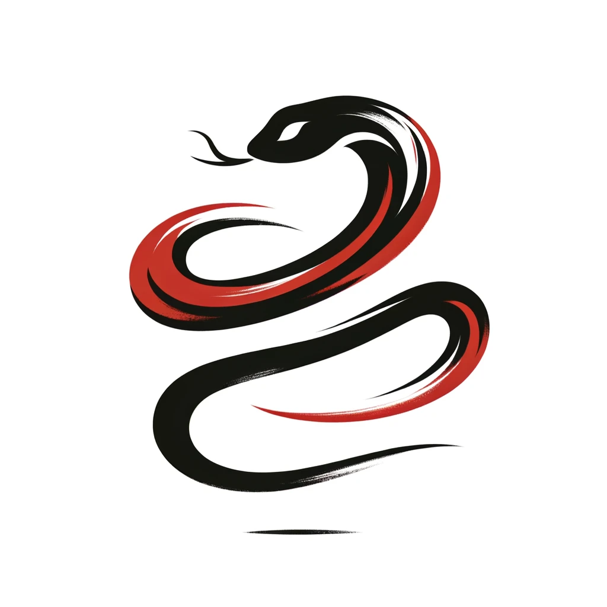
Year of the Dragon Fortune:
English
Health: Prioritize mental and physical wellness. Stress management and relaxation techniques will be beneficial.Relationship: A year for introspection in relationships. Communication and understanding are key. New friendships may blossom.Career: Strategic planning will lead to success. Be open to learning and new opportunities. Networking is crucial.Finance: A stable financial year. Wise investments and savings plans are recommended. Avoid unnecessary expenditures.
中文 (Chinese)
健康: 优先考虑心理和身体健康。压力管理和放松技巧将非常有益。感情: 在感情上是一个自省的一年。沟通和理解是关键。新的友谊可能会萌芽。事业: 战略规划将带来成功。对学习和新机会持开放态度。建立人脉至关重要。财务: 财务稳定的一年。建议明智的投资和储蓄计划。避免不必要的开支。
日本語 (Japanese)
健康: 心身のウェルネスを優先しましょう。ストレス管理とリラクゼーション技術が有益です。関係: 関係性において内省的な一年です。コミュニケーションと理解が鍵です。新しい友情が芽生えるかもしれません。キャリア: 戦略的計画が成功を導きます。学びと新しい機会に対してオープンでいてください。ネットワーキングが重要です。財務: 安定した財務の年です。賢い投資と貯蓄計画が推奨されます。不必要な支出は避けてください。
Horse (1930, 1942, 1954, 1966, 1978, 1990, 2002, 2014, 2026)
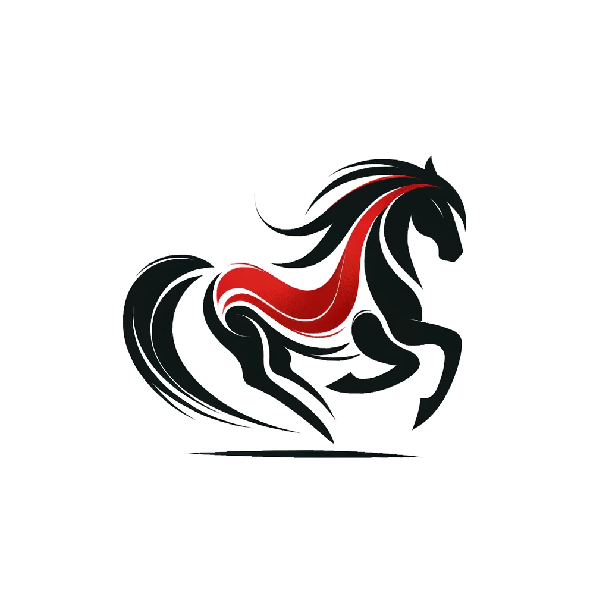
Year of the Dragon Fortune:
English
Health: This year, focus on regular exercise and outdoor activities. Pay attention to your respiratory health.Relationship: A great year for romance and friendships. Communication will be key. If single, you may find a significant other.Career: Expect progress and potential for new ventures. Networking will open new doors. Stay determined.Finance: Be cautious with investments. It’s a good year for financial planning and saving.
中文 (Chinese)
健康: 今年要注重定期锻炼和户外活动。注意呼吸系统的健康。感情: 是浪漫和友谊的大好时机。沟通是关键。如果您单身，可能会找到意中人。事业: 期待进步和新企业的潜力。建立人脉将打开新的大门。保持决心。财务: 对投资持谨慎态度。今年是进行财务规划和储蓄的好年份。
日本語 (Japanese)
健康: 今年は定期的な運動とアウトドア活動に重点を置きましょう。呼吸器系の健康に注意してください。関係: 恋愛と友情にとって素晴らしい年です。コミュニケーションが重要です。独身の場合、パートナーを見つける可能性があります。キャリア: 進歩と新しい事業への可能性を期待してください。ネットワーキングが新しい扉を開きます。決意を持って取り組んでください。財務: 投資には慎重に。財務計画と貯蓄には良い年です。
Goat (1931, 1943, 1955, 1967, 1979, 1991, 2003, 2015, 2027)
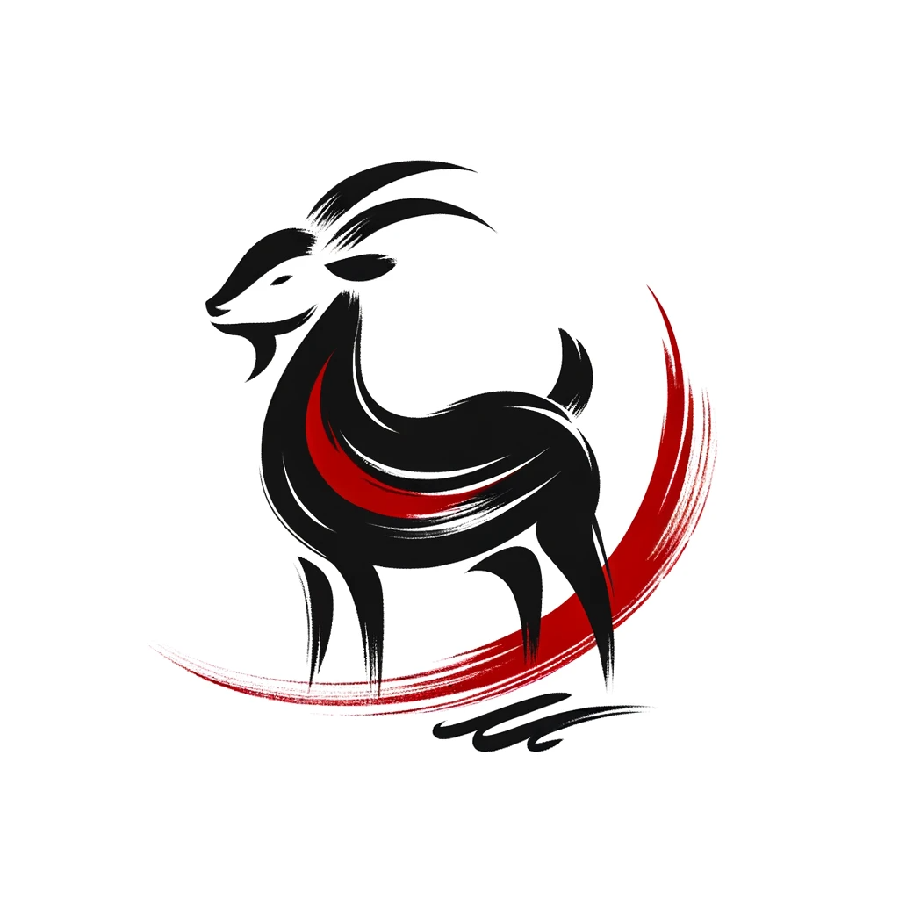
Year of the Dragon Fortune:
English
Health: This year, focus on relaxation and mental well-being. Practice activities like yoga or meditation for better health.Relationship: A harmonious year for relationships. Great time for singles to find love and for those in relationships to strengthen their bonds.Career: Expect stability in your career. It's a good year to enhance skills and consider creative projects.Finance: Manage your finances wisely. Avoid major investments and focus on saving.
中文 (Chinese)
健康: 今年，注重放松和心理健康。练习瑜伽或冥想，以改善健康状况。人际关系: 人际关系和谐的一年。单身者有望找到爱情，有伴侣者可加强彼此的关系。事业: 职业稳定。今年适合提升技能，考虑创意项目。财务: 理智管理财务。避免大额投资，专注于储蓄。
日本語 (Japanese)
健康: 今年はリラクゼーションと精神的な健康に重点を置いてください。健康を向上させるためにヨガや瞑想を行いましょう。関係性: 関係性にとって調和のとれた年。独身者には恋愛が見つかり、カップルは絆を強化する良い時期です。キャリア: キャリアは安定しています。スキルを高め、クリエイティブなプロジェクトを検討するのに良い年です。財務: 賢く財政を管理しましょう。大きな投資を避け、節約に集中してください。
Monkey (1932, 1944, 1956, 1968, 1980, 1992, 2004, 2016, 2028)
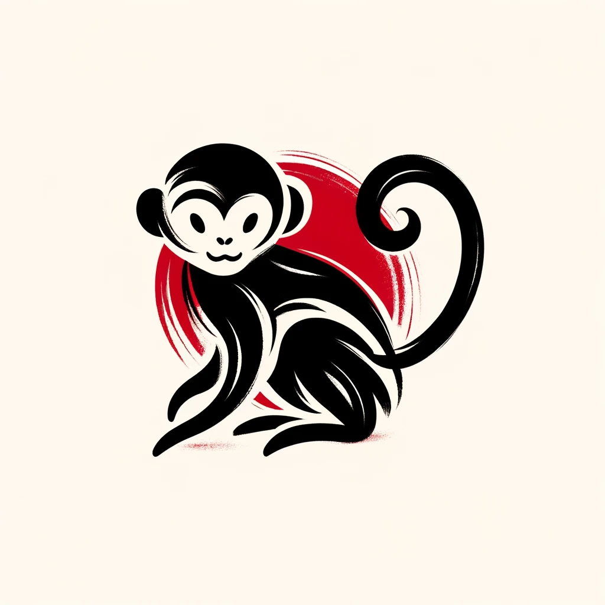
Year of the Dragon Fortune:
English
Health: Focus on balanced nutrition and regular exercise. Mental health is equally important; consider mindfulness practices.Relationship: A year of joyful interactions and social gatherings. For singles, the chance of meeting someone special is high.Career: Creativity and innovation will drive your career forward. Stay open to new ideas and collaborations.Finance: Financial stability is within reach. Wise spending and investment will yield good returns.
中文 (Chinese)
健康: 注重均衡营养和定期锻炼。心理健康同样重要；考虑练习正念。感情: 一个充满快乐互动和社交聚会的年份。单身者有很高的机会遇见特别的人。事业: 创新和创造力将推动您的职业发展。对新想法和合作保持开放态度。财务: 财务稳定触手可及。明智的消费和投资将带来良好的回报。
日本語 (Japanese)
健康: バランスの取れた栄養と定期的な運動に重点を置きましょう。心の健康も同様に重要です；マインドフルネスの実践を考えてみてください。関係: 楽しい交流と社交の集まりが多い年です。独身者には特別な人に出会うチャンスが高まります。キャリア: 創造性と革新がキャリアを前進させます。新しいアイデアや協力にオープンでいてください。財務: 財務の安定が手の届くところにあります。賢い支出と投資が良いリターンをもたらします。
Rooster (1933, 1945, 1957, 1969, 1981, 1993, 2005, 2017, 2029)
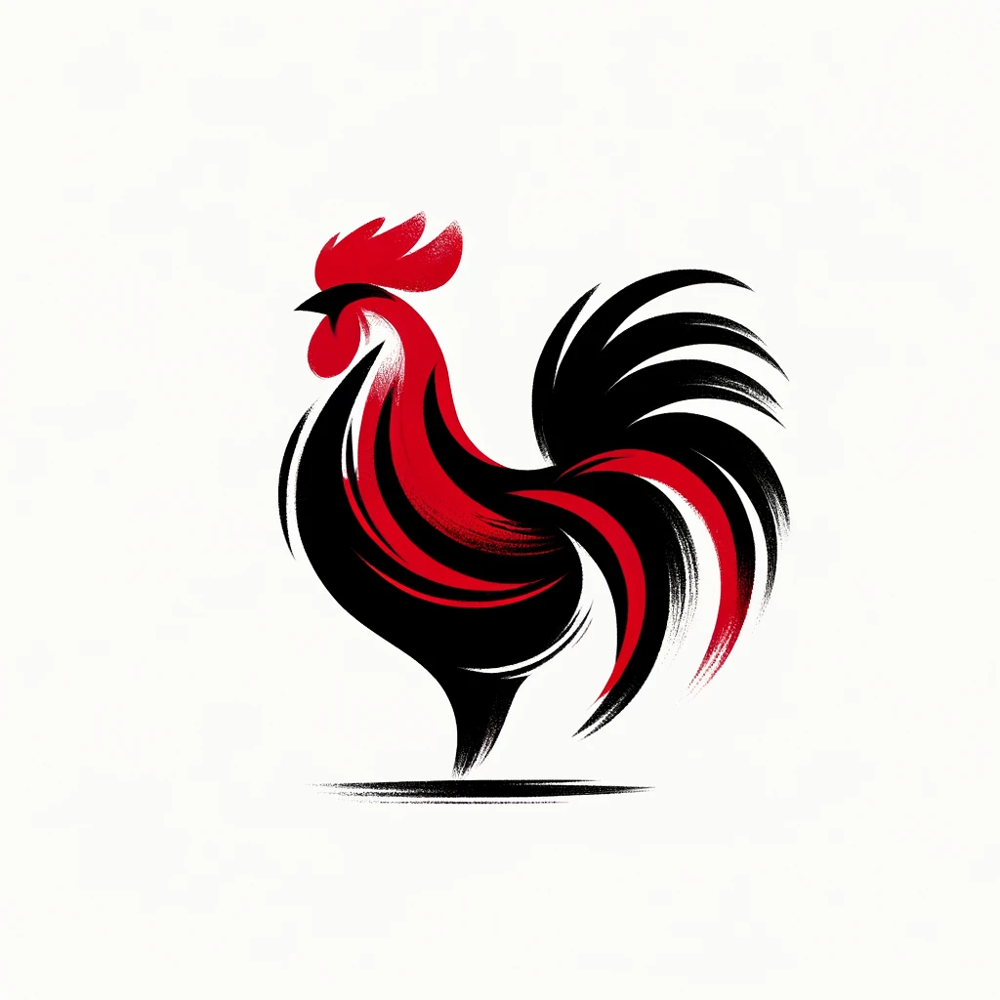
Year of the Dragon Fortune:
English
Health: Pay attention to your physical well-being. Regular check-ups and a balanced diet are recommended.Relationship: Communication is vital in relationships this year. For singles, be open to new connections.Career: A year of growth and learning. Be proactive in seeking opportunities for advancement.Finance: Financial planning is key. Avoid risky investments and focus on saving.
中文 (Chinese)
健康: 关注身体健康。建议定期体检和均衡饮食。感情: 沟通是今年感情关系中的关键。单身者要对新的联系保持开放。事业: 成长和学习的一年。主动寻求晋升机会。财务: 财务规划是关键。避免风险投资，专注于储蓄。
日本語 (Japanese)
健康: 体の健康に注意を払いましょう。定期的な健康診断とバランスの良い食事が推奨されます。関係: 今年の人間関係ではコミュニケーションが重要です。独身の方は新しいつながりにオープンになりましょう。キャリア: 成長と学習の年です。積極的に昇進の機会を求めてください。財務: 財務計画が鍵です。リスクの高い投資は避け、貯蓄に注力しましょう。
Dog (1934, 1946, 1958, 1970, 1982, 1994, 2006, 2018, 2030)
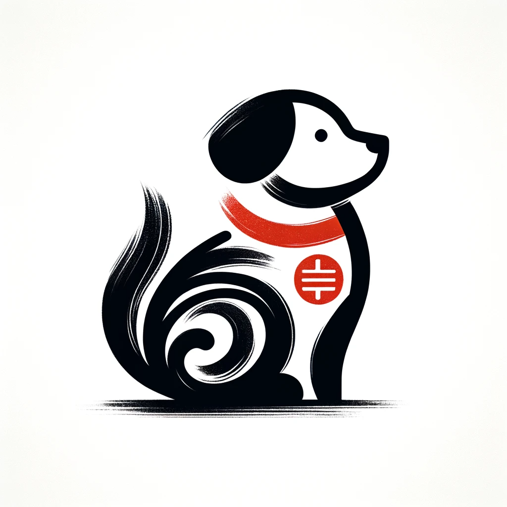
Year of the Dragon Fortune:
English
Health: Prioritize mental well-being and stress management. Outdoor activities and exercise will be beneficial.Relationship: A year of meaningful connections. For singles, there's a chance of finding a significant relationship.Career: Opportunities for growth and advancement. Stay committed and focused on your goals.Finance: Stability in finances. Consider long-term investments and saving strategies.
中文 (Chinese)
健康: 优先考虑心理健康和压力管理。户外活动和锻炼将有益。感情: 充满意义的联系的一年。对单身者来说，有可能找到重要的关系。事业: 成长和晋升的机会。保持承诺和专注于您的目标。财务: 财务稳定。考虑长期投资和储蓄策略。
日本語 (Japanese)
健康: 精神的な健康とストレス管理を優先しましょう。アウトドア活動と運動が有益です。関係: 意義のあるつながりの年です。独身の方には重要な関係を見つけるチャンスがあります。キャリア: 成長と進歩の機会があります。目標にコミットし、集中してください。財務: 財務の安定。長期投資や貯蓄戦略を検討しましょう。
Pig (1935, 1947, 1959, 1971, 1983, 1995, 2007, 2019, 2031)
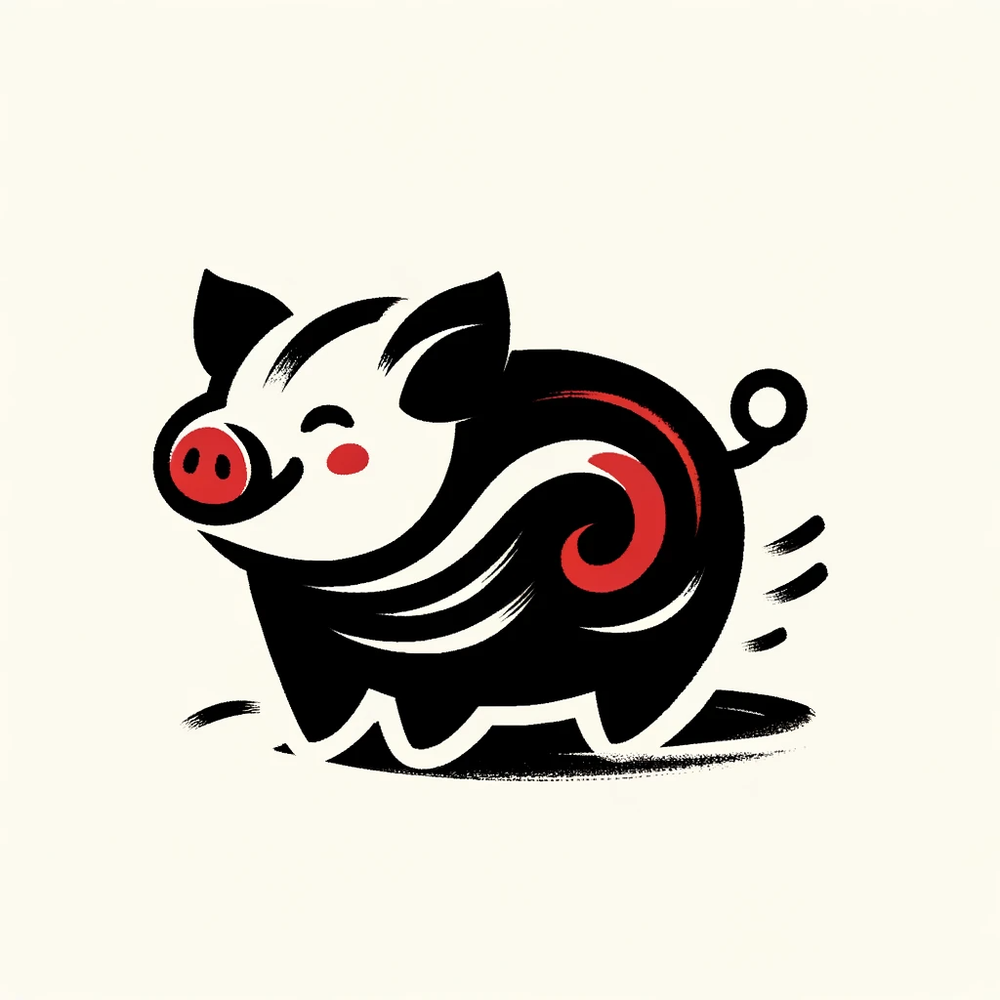
Year of the Dragon Fortune:
English
Health: Focus on maintaining a healthy lifestyle with balanced nutrition and regular exercise. Avoid stress and get enough rest.Relationship: A harmonious year for relationships. Communication and mutual understanding will enhance connections.Career: A year of potential progress. Stay open to new opportunities and be ready to adapt.Finance: Stable financial prospects. Budget wisely and avoid overspending.
中文 (Chinese)
健康: 关注维持健康的生活方式，包括均衡饮食和规律运动。避免压力并获得充足的休息。感情: 感情关系和谐的一年。沟通和相互理解将增强联系。事业: 潜在进步的一年。对新机会保持开放，并准备适应。财务: 财务前景稳定。明智预算，避免超支。
日本語 (Japanese)
健康: 健康的なライフスタイルを維持することに焦点を当ててください。バランスの良い栄養と定期的な運動が大切です。ストレスを避け、十分な休息を取ってください。関係: 関係性において調和のとれた年です。コミュニケーションと相互理解がつながりを強化します。キャリア: 進展の可能性がある年です。新しい機会にオープンであり、適応する準備をしてください。財務: 財務状況は安定しています。賢く予算を立て、浪費を避けましょう。
Rat (1924, 1936, 1948, 1960, 1972, 1984, 1996, 2008, 2020)
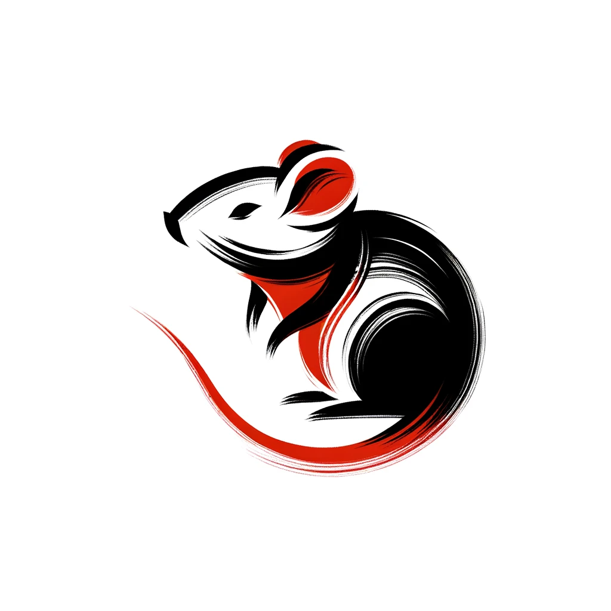
Year of the Dragon Fortune:
English
Health: Focus on a balanced diet and regular exercise. Stress reduction techniques will be beneficial.Relationship: A year for nurturing relationships. Good communication will enhance bonds with loved ones.Career: Opportunities for career advancement. Innovation and hard work will pay off.Finance: A favorable year for financial planning and investment. Budgeting and savings are key.
中文 (Chinese)
健康: 注重均衡饮食和定期锻炼。减压技巧将非常有益。感情: 是培养关系的一年。良好的沟通将加强与亲人的联系。事业: 职业发展的机会。创新和努力工作将得到回报。财务: 财务规划和投资的有利年份。预算和储蓄是关键。
日本語 (Japanese)
健康: バランスの取れた食事と定期的な運動に重点を置きましょう。ストレス軽減技術が有益です。関係: 関係を育む年です。良好なコミュニケーションが愛する人との絆を強化します。キャリア: キャリアアップの機会があります。革新と努力は報われます。財務: 財務計画と投資に適した年です。予算立てと貯蓄が鍵となります。
Ox (1925, 1937, 1949, 1961, 1973, 1985, 1997, 2009, 2021)
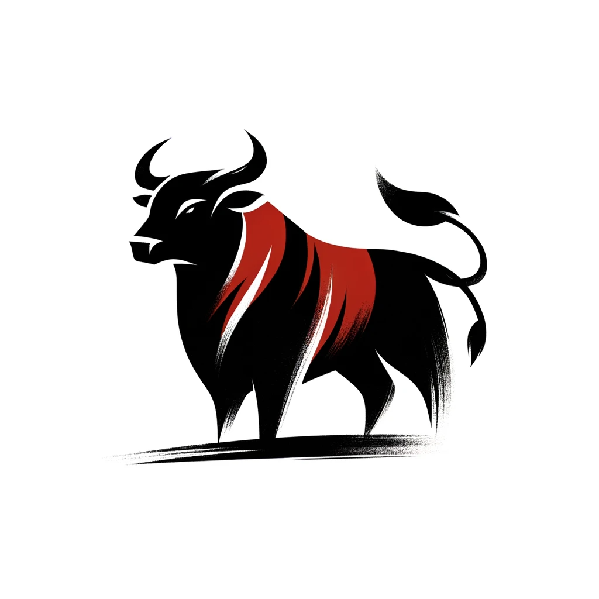
Year of the Dragon Fortune:
English
Health: Prioritize maintaining a healthy lifestyle, with a focus on regular physical activity and balanced nutrition.Relationship: Relationships may require more effort this year. Communication and patience are key.Career: Hard work and determination will bring positive results. Be open to new opportunities and collaborations.Finance: Manage your finances wisely. It's a good year for investments, but caution is advised.
中文 (Chinese)
健康: 优先保持健康的生活方式，重点是规律的身体活动和均衡的营养。感情: 今年的感情关系可能需要更多的努力。沟通和耐心是关键。事业: 辛勤工作和决心将带来积极的结果。对新机会和合作保持开放态度。财务: 明智地管理您的财务。今年投资是好的，但需要谨慎。
日本語 (Japanese)
健康: 健康的なライフスタイルを維持することを優先し、定期的な運動とバランスの取れた栄養に焦点を当ててください。関係: 今年は関係がより努力を必要とするかもしれません。コミュニケーションと忍耐が重要です。キャリア: 一生懸命働くことと決意が良い結果をもたらします。新しい機会と協力にオープンでいてください。財務: 財務を賢く管理しましょう。投資には良い年ですが、注意が必要です。
Tiger (1926, 1938, 1950, 1962, 1974, 1986, 1998, 2010, 2022)
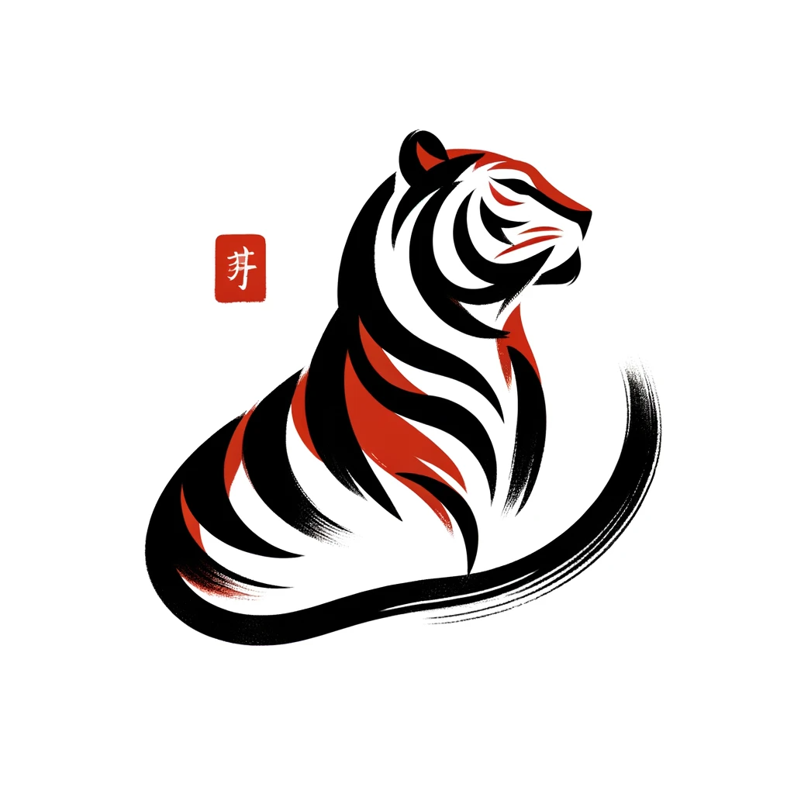
Year of the Dragon Fortune:
English
Health: Focus on maintaining a balanced lifestyle. Regular exercise and proper rest are essential.Relationship: A year of strong emotional connections. Be open and honest in your communications.Career: Opportunities for growth and success. Be bold and take on new challenges.Finance: Wise financial decisions will lead to stability. Be cautious with high-risk investments.
中文 (Chinese)
健康: 专注于保持平衡的生活方式。定期锻炼和适当的休息至关重要。感情: 情感联系强烈的一年。在沟通中保持开放和诚实。事业: 成长和成功的机会。勇敢面对新挑战。财务: 明智的财务决策将带来稳定。对高风险投资保持谨慎。
日本語 (Japanese)
健康: バランスの取れたライフスタイルを維持することに集中しましょう。定期的な運動と適切な休息が不可欠です。関係: 強い感情的なつながりのある年です。コミュニケーションでオープンかつ正直でいてください。キャリア: 成長と成功の機会があります。果敢に新しい挑戦を受け入れましょう。財務: 賢い財務判断が安定につながります。高リスク投資には慎重に。
Rabbit (1927, 1939, 1951, 1963, 1975, 1987, 1999, 2011, 2023)
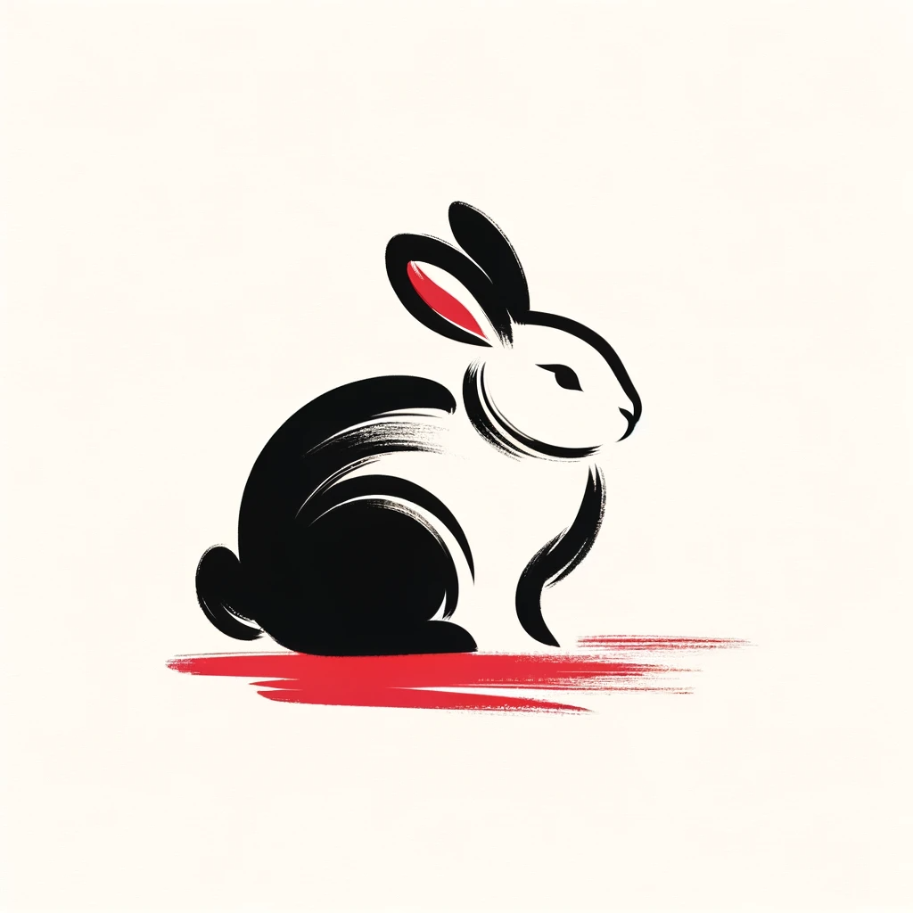
Year of the Dragon Fortune:
English
Health: Focus on emotional and physical well-being. Engage in stress-reducing activities and maintain a healthy diet.Relationship: A year of harmony in relationships. Good communication will be crucial for deepening connections.Career: A period of stability and gradual progress. Collaboration and teamwork will yield positive results.Finance: Financial stability is on the horizon. Be mindful of your expenditures and save for the future.
中文 (Chinese)
健康: 专注于情感和身体健康。参与减压活动并保持健康饮食。感情: 感情关系和谐的一年。良好的沟通对加深联系至关重要。事业: 稳定和逐步进步的时期。合作和团队合作将带来积极的结果。财务: 财务稳定在望。注意开支并为未来储蓄。
日本語 (Japanese)
健康: 感情的、身体的健康に焦点を当ててください。ストレスを減らす活動に参加し、健康的な食事を心がけましょう。関係: 関係性において調和のとれた年です。コミュニケーションが深いつながりを築くために重要です。キャリア: 安定と徐々に進歩する時期です。協力とチームワークが良い結果をもたらします。財務: 財務の安定が見込まれます。支出に注意し、将来のために貯蓄しましょう。